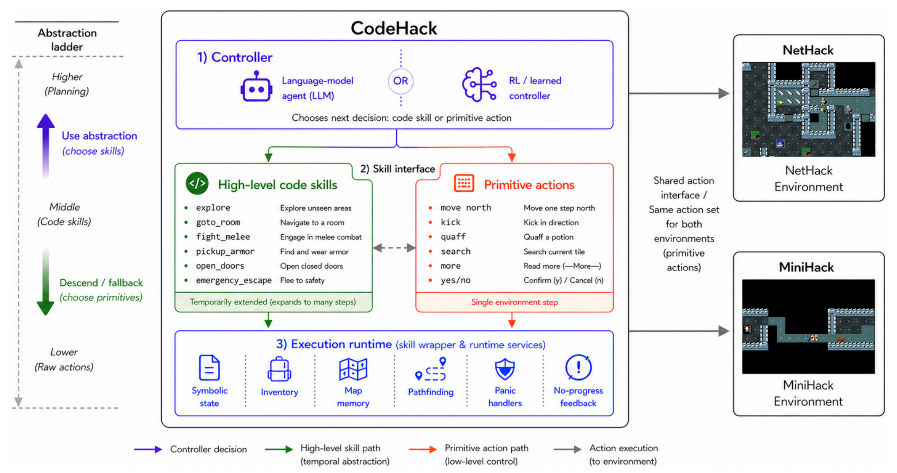
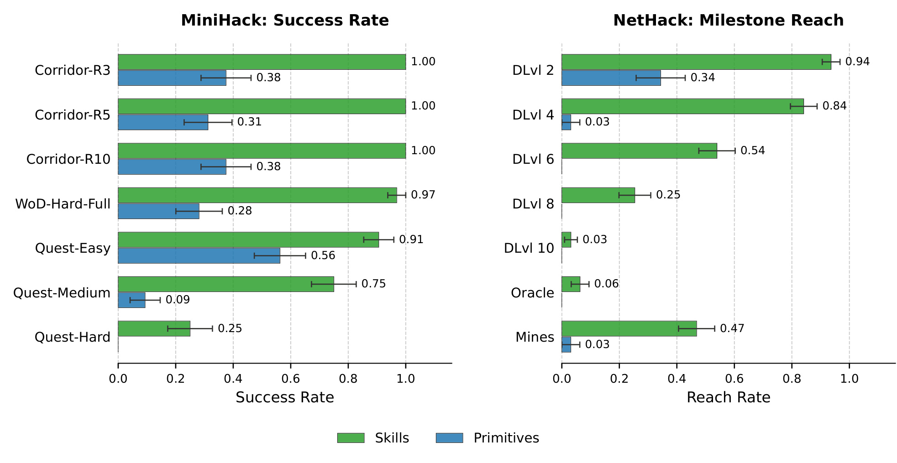
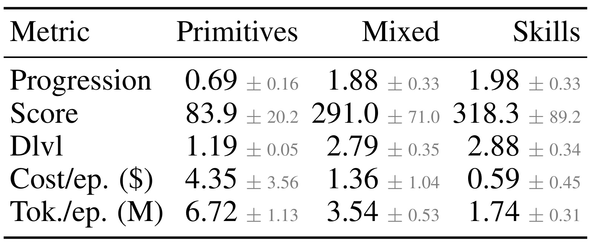
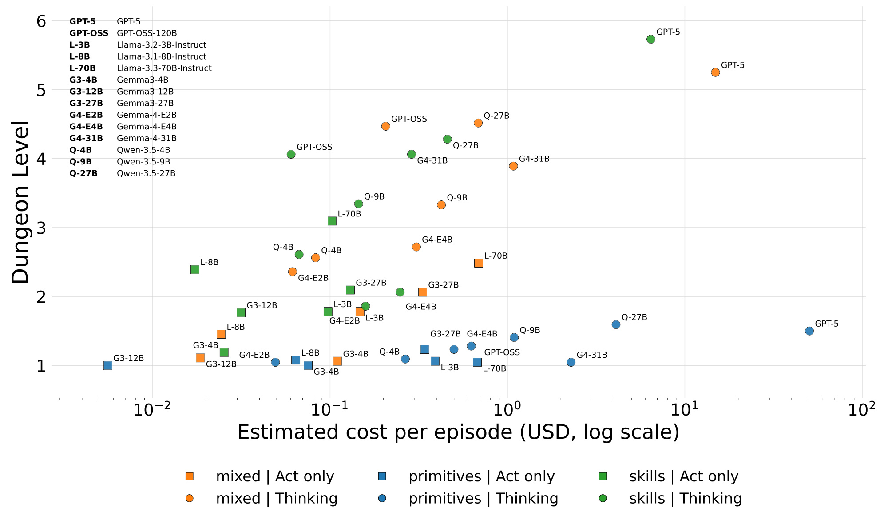
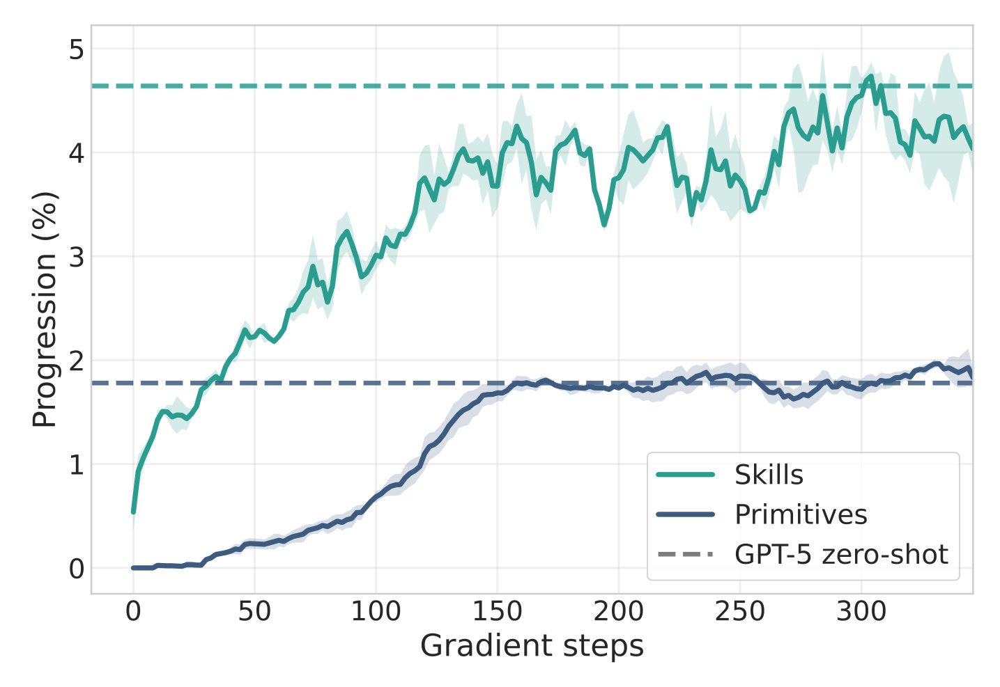
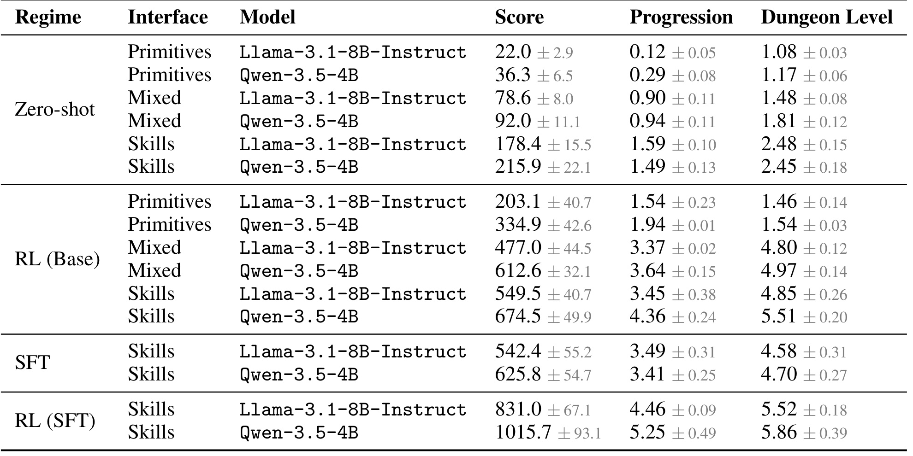
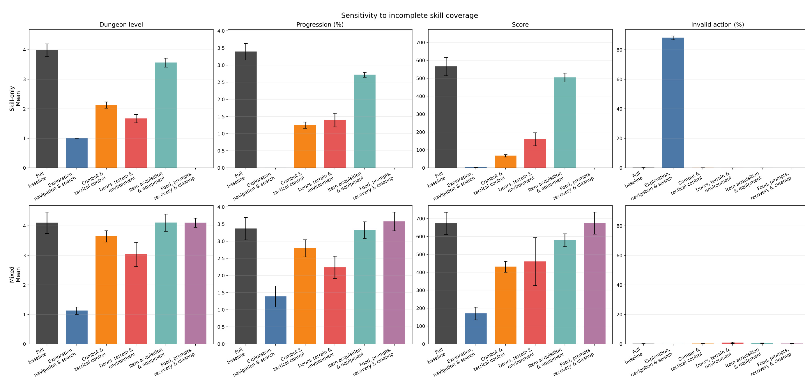
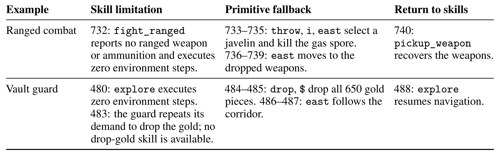

CodeHack：语言代理如何在代码技能与原始动作之间切换
《Up and Down the Abstraction Ladder: Code-Based Skills for Language Agents》研究固定代码技能库如何改变语言代理的长程控制、推理成本和学习效率。第一作者 Bartłomiej Cupiał 来自华沙大学与 AKCES NCBR，Jens Tuyls 来自普林斯顿大学，两人为共同一作；合作机构还包括 IDEAS NCBR、伦敦大学学院、麦吉尔大学、Mila、Mistral AI 和波兰科学院。论文于 2026 年 9 月 25 日公开，唯一论文入口为 arXiv:2609.31076。项目页已核验可访问，并展示演示与代码链接；代码仓库完整性与可复现实验尚未独立验证。以下依据完整 33 页 PDF 解读，所有数字均为论文报告结果。
语言代理在需要长串低层动作的环境里难以高效行动和学习。代码技能可以接管重复的局部决策，但任何固定抽象都可能遇到能力之外的情境，代理仍需要退回原始动作；问题在于如何同时得到抽象带来的效率和低层控制的灵活性。
1. 背景和问题
语言模型能说出合理计划，不代表它能稳定执行计划中的每一个动作。NetHack 把这个差别放大得很清楚：玩家需要探索程序生成的地下城，开门、寻找暗门、躲避敌人、管理背包、使用物品，并在很长的轨迹里保存必要资源。一次看起来简单的远程攻击，到了终端交互层面，可能需要先发出投掷命令，再选择背包字母，最后指定方向。模型不仅要理解战术，还必须把命令、菜单和确认提示串成合法序列。如果每个按键都调用语言模型，许多推理计算其实消耗在反复解决已知的局部问题上；任何一次错误又可能让下一步处于完全不同的菜单状态，造成连锁失误。
这篇论文关心的不是把模型知识扩充多少，而是模型面对的动作接口能否改变任务难度。让代理逐格移动，是一种非常细的控制；让它调用“探索当前区域”，则把许多移动、检查和路径选择交给程序。两者都在同一个游戏里运行，却对应截然不同的决策时域。原始动作保留最细控制能力，但要求模型连续做大量决定；技能动作减少高层决定次数，同时引入设计者写入的游戏知识和执行规则。因此，观察到技能代理更强时，不能直接解释成语言模型本身获得了更好的规划能力，也不能忽略技能库的开发工作。作者主动把技能设为给定输入，研究一个明确条件下的问题：已有一套可复用行为之后，动作抽象能带来多大收益，付出哪些灵活性代价。
这里的技能不是一份告诉代理“如何思考”的说明文档，也不是调用外部数据库的工具。它是与控制器处在同一个环境中的小策略，可以读取当前观测与记忆，在多个环境步里持续采取动作，并在完成或中断后把控制权还给外层模型。自然语言描述的作用是让模型知道何时使用技能，实际运动和交互由 Python 程序执行。例如 goto_room 根据已知地图走向房间，fight_melee 处理近战，open_doors 完成门的交互。这些动作名承载语义，又有可以检查和测试的实现。论文的贡献因而主要是共享运行时和系统性比较，而不是发现一种全新的层次强化学习理论，更不是让模型从零自主生成整个技能库。
固定技能库又不可能覆盖所有情况。探索技能可能在商店、金库或特殊地形前停住，战斗技能可能识别不到某种临时可用武器，长程资源管理也不一定能被几个局部程序解决。只有技能的代理遇到这些缺口，可能不断重复无效调用；允许原始动作的混合代理可以下到更低抽象层，完成缺失步骤，再回到技能层。这条下降通道听起来合理，却增加了一个新的选择：当前究竟应该使用技能，还是亲自处理原始命令？拥有更多动作不等于一定使用得更好。模型可能切换太晚，也可能无目的地使用原始动作，浪费了原本可以由代码完成的过程。因此，论文同时比较原始动作、仅技能、技能与原始动作混合三种接口，而不是只对比一个复杂系统和一个裸模型。
NetHack 适合研究这种权衡，是因为它既有重复行为，又有长期不确定性。完整通关要经过五十余层及后期区域，拿到目标物再回到地面，成功游戏往往跨越成千上万乃至更长的回合。关卡由新随机种子产生，简单记住固定路线没有用；玩家还会返回旧层或进入支线，因而看到的轨迹不是一条直线。论文训练与评估使用的运行限制远短于完整人类游戏，结果主要说明早期探索和行为组织的改善。即使技能代理能够明显到达更深层数，也不能据此宣称解决了完整 NetHack。这个距离是理解论文结论时必须始终保留的背景。
作者同时引入 MiniHack，把大任务拆成可诊断的七类受控测试。三个 Corridor 任务分别增加房间和探索复杂度，死亡魔杖任务要求获得并正确使用物品，三个 Quest 任务组合迷宫、战斗、熔岩跨越和物品使用。局部任务的成功率比较可以帮助判断技能究竟修复了哪种操作障碍，而完整环境的层数、进度和得分观察这些行为能否被协调起来。两类环境共享执行运行时，但 MiniHack 会使用任务对应技能子集并增加七个专用技能。因此，它提供的是跨环境复用和受控诊断证据，不能被描述为完全不增补能力的无条件迁移。
从研究问题上看，本文拆开了三件经常混为一谈的事。第一是无需训练就能使用技能带来的接口收益；第二是强化学习是否能更有效地学会组合技能；第三是模仿较强教师是否进一步改善初始化。零样本实验覆盖十四个模型，学习实验则集中在两个较小模型。这样的设计能够区分收益发生在哪个环节，但也限定了结论范围：跨模型广泛成立的证据来自零样本扫描，训练效率结论来自更窄的模型集合。开发者若希望把结论用于网页操作或软件工程，需要另外设计相应环境里的技能、终止条件、错误反馈和评测预算，而不能只把几个技能名称放进提示词就期待复制数值提升。
与已有工作相比，作者特别强调控制层和技能层的分工。部分以往方法让语言模型生成执行代码，另一些方法学习参数化技能再用程序组合，还有开放世界代理不断扩展自己的行为库。本文把这些变化暂时固定下来，只让控制器在既有程序上学习，因此实验更容易回答动作抽象本身的价值，却无法回答技能发现需要多少数据、人工设计是否能规模化等问题。经典选项框架早已表明预定义行为可能改善学习与探索，本文新增的是面向语言代理、开放长程游戏、推理成本以及混合回退的一组联合证据。这个定位也解释了为什么不能仅凭技能库开源，就认定系统具备持续自我改进能力。
2. 方法
2.1 把历史上的行为定义为可终止的选项
论文沿用层次强化学习的 option 形式化，但把定义域从可见完整状态换成交互历史。NetHack 是部分可观测环境，当前屏幕看不到所有地图，也不能提供完整潜在状态；一次技能执行所需要的信息可能来自以前见过的房间、门和物品。设历史集合为 $\mathcal H$，原始动作集合为 $\mathcal A$，技能集合为 $\Omega$，一个技能包含可启动集合、内部策略与终止函数。论文没有给这些定义逐一编号，以下按原文数学关系整理展示。
符号解释：$\omega$ 是一个技能，$I_\omega$ 是允许调用它的历史集合，$\pi_\omega$ 决定执行中的原始动作，$\beta_\omega$ 决定何时结束。本文允许在任何历史上请求任意技能，这不意味着每个技能在每个状态下都能成功。不可执行的请求可以立即返回，甚至不消耗环境步，并通过反馈告诉模型当前选择无效。这个区分将适用性判断的一部分留给外层控制器，使动作接口可以统一，同时也让重复无效调用成为值得观察的失败模式。
符号解释：$\Delta$ 表示在对应集合上的概率分布，$\pi_\omega(a\mid h)$ 是技能在历史 $h$ 下执行原始动作 $a$ 的内部策略，$\mu$ 是外层语言模型策略。仅技能接口把外层支持集限制为 $\Omega$，仅原始动作接口限制为 $\mathcal A$，混合接口允许二者并集。改变的是模型决策的动作单位，技能实现本身在实验期间保持固定。 外层选中一个技能后，运行时持续执行其内部策略，直到任务完成、遇到意外或回合终止；例如杀死目标怪物或者角色受伤时，终止函数可以取一。这样把一串可重复的局部选择压缩为一次模型决策，同时通过可终止执行避免代码盲目前进。
2.2 共享运行时与可中断执行

Figure 2 的上方是外层控制器，它可以是语言代理或学习后的策略；中间绿色路径是代码技能，红色路径是原始动作；下方是二者共同使用的状态与执行服务。读图时最应注意的不是技能列表有多少项，而是两条路径最终进入同一个运行时。原始命令被登记成只执行一步的策略，技能可以展开成多步，因此比较时不必替换游戏包装器、地图记忆或背包追踪实现。如果给技能组更多状态信息、而让原始动作组自己从头解析屏幕，效果很可能混入额外观测能力；共享基础设施正是为了尽量减少这种混杂。右侧两个环境表示该控制层可以连接 NetHack 与 MiniHack，而非把两套不同任务环境拼接成一个新的任务。
图中地图记忆与路径搜索相互配合：运行时记录已经见过的可行走位置、房间、楼梯、陷阱和门，再在当前已知地图上规划路径，并对危险位置调整代价。背包管理器把物品字符串转成有类型的对象，技能可以按食物、护甲、魔杖等类别操作，而不是每次都重新猜测菜单语义。符号状态还包含角色状态、当前消息、光标及其他观测信息。每执行一个原始动作，运行时都会刷新这些结构，因而探索技能并非提前输出一串不可修改的按键；它能在过程中新看到障碍后改变下一步。这种带反馈的程序策略，正是它与简单宏命令的区别。
最右侧两个服务对应抽象失效的反馈出口。紧急处理器在每个原始步后检查角色失血或新出现的可达敌人等事件，一旦触发就交还控制；无进展反馈则指出技能调用没有产生任何环境步。两种反馈解决不同问题：前者防止在危险状态下继续执行既定程序，后者防止模型把一次空调用误当作已经完成了行动。控制器收到反馈后，可以选择别的技能，也可以在混合接口中使用低层动作。图左“上升”和“下降”因此是实际控制权的流动，并非仅仅改变提示词详细程度。论文并未证明这个回退选择已经最优，它提供的是允许学习和观察这种选择的统一机制。
运行时的调用返回会记录实际消耗的原始环境步数 env_steps，并汇总技能内部奖励与辅助统计。语言模型接收文本观测、ASCII 地图、背包和有限历史，主要设置保留五个交互回合及两个最近观测。动作通过规定标签解析；如果输出格式不合法，环境会执行默认回退并提示上一动作无效，而不是立即终止评测。NetHack 的主实验暴露七十八个技能，覆盖探索导航、战斗、门与地形、装备获取以及食物恢复等行为。技能通过人类知识设计，在端到端测试、人类游戏和 GPT-5 游戏中迭代调试。它们不是训练时自动发现的 latent skills，也没有在强化学习中持续改写源代码；学习发生在如何调用和组合这些固定程序的外层策略上。
2.3 固定技能库上的监督初始化与强化学习
零样本阶段保持任务参数、观测格式和提示模板一致，只改变动作名单与描述。十四模型扫描中，GPT-5、GPT-OSS、Gemma-4 与 Qwen-3.5 使用推理模式，Llama 与 Gemma3 使用直接行动模式；这意味着不同模型之间的绝对差异还包含推理设置，最清晰的对照是同一模型在三个接口间的变化。学习阶段则让 Llama-3.1-8B-Instruct 和 Qwen-3.5-4B 都采用直接行动，从各自零样本起点训练。统一接口不仅有利于评测，也让同一套环境采样机制支持后续策略更新。
强化学习使用 PPO，奖励来自游戏得分变化，技能的一次高层转换汇总其内部原始转换奖励。每张训练 GPU 收集三十二条 rollout，每条包含十六次控制器决策；主表统一比较二百六十四次梯度更新后的检查点。这里的“相同预算”首先是控制器决策与更新协议相同，不能自动解释成相同原始环境转换数，因为技能的一次决定可能推进很多步。附录同时给墙钟时间曲线，补充现实速度证据；但若严格比较环境样本效率，仍应记录每类接口实际消耗的原始步总量。
监督初始化使用 Gemma-4-31B 收集的一千零二十四条零样本教师轨迹，在仅技能接口上训练一个 epoch。SFT 只训练 rank-stabilized LoRA，rank 为一百二十八、缩放为六十四，然后合并回基础模型作为后续 PPO 起点。PPO 的策略和值函数也用适配器，学习率均为 $2\times10^{-6}$，GAE 参数为 $0.95$，裁剪范围为 $0.2$。论文以 Ray 调度采样，用 vLLM 推理、PyTorch 更新，并通过双缓冲让采样与训练重叠。由于由此引入策略滞后，加上推理与训练后端概率可能不同，重要性比率使用采样时 vLLM 实际记录的序列对数概率。原文没有提出新的 PPO 目标公式，核心创新仍是动作抽象实验；复现时这些概率与预算细节却会直接影响是否能得到稳定可比的学习曲线。
3. 实验结果
3.1 零样本表现与指标含义
实验报告三个不同概念：游戏自带得分、到达过的最大地下城层数，以及 BALROG 定义的进度。得分混合杀敌、金币和探索收益，不等同于通关目标。进度依据人类轨迹，把曾达到的地下城层数和经验等级映射成相应经验曲线上的概率，再取较大值：
符号解释：$d^\star$ 是本回合最高地下城层数，$x^\star$ 是最高经验等级，两个 $p$ 是 BALROG 从人类游戏统计得到的进度映射。它是人类轨迹定义的代理度量，不能把进度百分比直接当成代理实际通关概率。本文同时看三项指标，是为了避免某个局部刷分行为制造整体能力提高的错觉。

Figure 3 左侧是 GPT-5 在七个 MiniHack 任务上的成功率，右侧是完整 NetHack 的里程碑到达率；每项按三十二回合汇总。三个 Corridor 任务使用技能时均达到百分之百，原始动作大约只有百分之三十一至三十八，这说明即使没有复杂长期战略，低层导航与隐藏门搜索也足以拖累模型。死亡魔杖任务从百分之二十八升至百分之九十七，进一步把改善范围扩展到获得并使用物品。Quest-Easy、Medium 和 Hard 的技能成功率分别为百分之九十一、七十五和二十五，原始动作则约为五十六、九和零。论文报告七任务平均提高五十五个百分点，这是成功率的绝对差，不是相对提高百分之五十五。
右图必须与左图分开理解。NetHack 到达第四层的比例由百分之三升至八十四，到达第六层为五十四，第八层为二十五，第十层只有三。前几个里程碑的大幅改善与深处迅速变低同时成立：技能解决了大量早期操作瓶颈，但并没有形成完整通关策略。矿坑到达率从三升至四十七，也只能说明代理更经常进入这条支线，不能证明完成了支线后续目标。图上的误差线提醒这些不是确定性保证，尤其小样本中一个成功回合就会改变几个百分点。受控任务接近满分和完整任务远未解决并不矛盾，因为后者需要更长的资源管理、知识覆盖和战略协调。由此得到的稳健结论是固定技能显著改善测试内的操作可靠性，而不是简单把局部百分之百推广到整个游戏。

Table 1 以十四个模型的均值为单位做等权平均，灰色数字是模型级均值之间的标准误。原始动作、混合和仅技能的进度依次为百分之零点六九、一点八八、一点九八；分数为八十三点九、二百九十一、三百一十八点三；最大层数均值为一点一九、二点七九、二点八八。技能相对原始动作的进度约为二点九倍、得分约为三点八倍、层数约为二点四倍。因此标题式“近三倍”特指平均进度，不能搬到全部指标上；更不能把进度一点九八误说成通关成功率接近百分之二。
成本两行呈现另一侧结果：每回合估计美元成本从四点三五降至零点五九，token 从六百七十二万降至一百七十四万。混合控制处在中间，成本一点三六美元、token 三百五十四万。它保留仅技能约百分之九十五的进度、九十一的得分和九十七的层数，但成本为仅技能约二点三倍，token 约两倍。这组数把灵活性定价了：能回退确实有用，常态下却可能引入额外选择与低层调用。表的聚合方式也值得警惕，模型价格与回合长度差异很大，昂贵模型会影响美元均值，不能理解为任意模型都节省同样比例。附录逐模型数据中也存在混合优于仅技能的个别点，所以总体趋势并不构成每个模型每项指标上的严格支配关系。标准误描述估计波动，也不等同于作者已经对每个成对比较进行了显著性检验。
3.2 成本前沿与抽象粒度

Figure 4 横轴是每回合估计推理成本，使用对数坐标；纵轴是最大地下城层数均值。颜色区分原始、混合与技能接口，形状区分直接行动和推理模式。最有解释力的读法是找到同名模型的三个点：多数模型切换到技能后向左上移动，意味着走得更深，同时模型调用更便宜。原始动作的一串蓝点大多贴近一至两层，即使美元成本增长很多也没有换来相称进展。技能接口的绿色点则呈现较清楚的能力差异，较强控制器可以把节省出来的决策能力用于组织行为，而不必把计算持续花在移动和菜单处理上。这是动作接口影响性能成本前沿的实验证据，不代表模型价格与能力存在一个普适函数关系。
本文给出的机制解释是语言模型调用次数平均减少约五点一倍，许多内部环境步由 CPU 上的代码策略执行。统计上的百分之八十六成本下降是对论文当时 OpenRouter 输入输出价格估算的每回合推理账单，既不包含手工开发技能成本，也不等同于训练 GPU 开销下降。token 下降百分之七十四与美元下降幅度不同，是因为模型价格、输入输出组成和轨迹长度都在影响汇总。一个代理早死也可能花费很低，所以只看横轴不足以证明效率，必须结合纵轴与任务完成情况。反过来，技能代理活得更久、环境推进更多仍能减少模型账单，才说明压缩高层调用有实质价值。
具体到 GPT-5，附录 Table 4 报告技能、混合、原始三种接口成本约为六点四四、十四点八八、五十点四一美元，层数分别为五点七三、五点二五、一点五零。该模型提供了很直观的成本性能对照，但不能用一个昂贵模型替代十四模型总体证据。图中混合的橙色点往往位于技能点右侧，有时更高、有时更低，说明开放原始动作没有自动形成更佳选择。实际系统若关心时延，还需要测量完整墙钟耗时、代码运行与外部环境等待；论文这张图主要度量 token 账单，并未给出所有这些成本。因此适当的工程启发是先测量哪些重复决策适合程序接管，再检查收益是否被错误回退和额外提示成本吃掉。
3.3 强化学习的增量与监督初始化

Figure 1 在论文开头展示了核心学习现象，但应放到学习实验口径下读。横轴是梯度步数，纵轴是进度百分比，绿色代表技能、蓝色代表原始动作，水平虚线为 GPT-5 对应接口的零样本参照。绿色曲线较快上升到几个百分点，蓝色在较晚阶段才上升并趋于较低平台，说明固定技能不仅让零样本开局更好，也改变了后续学习的可达收益。曲线有波动和误差带，不应只选择其中最高的尖峰作为最终成绩；正文统一检查点应以主结果表为准。这张概览画到三百余步，而主表比较二百六十四步，二者展示范围不同，不能从图末端目测一个数再说它对应主表精确结果。
虚线另有一个容易误读的地方：它比较的是不同模型和推理设置，不是把 GPT-5 也放进同一训练运行。较小模型加技能、经过训练后接近或超过某条零样本参照，只能支持特定环境和指标下的比较，不能说明其一般推理能力超过 GPT-5。原始动作曲线并非完全不学，它也获得进度改善；问题是许多更新仍用来学习繁琐的低层交互，最终层数和完整进度提升有限。技能路线相当于给策略更有结构的行动单元，让奖励更容易关联到有意义的行为组合。最后这一句是基于机制和曲线的解释，论文没有用单独实验把探索改进、信用分配缩短与动作合法率改善完全分离，因而不应把任何一种机制写成已经独立证实的唯一原因。

Table 2 才是计算训练收益的主要依据。Llama 的仅技能层数从二点四八升至四点八五，Qwen 从二点四五升至五点五一；原始动作对应从一点零八升至一点四六，以及从一点一七升至一点五四。先算增量，再跨两个模型平均，技能增量约为二点七一五，原始增量约为零点三七五，两者比值约七点二四，四舍五入得到论文的七点二倍。因此该数字是训练带来的平均层数增加之比，绝不是最终层数七点二倍，更不是任意任务上七点二倍加速。混合控制的同类增量比约为八点六，部分原因是它在这两个模型的零样本起点更低；最终技能层数仍略高于混合，这也说明“增长倍数大”与“最终表现最好”是不同命题。
监督初始化进一步提高最终成绩。Llama 仅技能直接 PPO 的进度为百分之三点四五，先 SFT 再 PPO 为四点四六，Qwen 对应四点三六与五点二五，相对提高约百分之二十九和二十。分数则分别从五百四十九点五到八百三十一、从六百七十四点五到一千零十五点七，均约提高百分之五十一。单独 SFT 已经提供很强起点，后续 RL 增量反而可能较小，但最终值更高。这不是免费的训练效率收益，因为教师数据采集与监督训练另有成本。主表零样本和 SFT 标准误按六十四评估回合算，RL 按训练种子均值算；附录 Qwen 混合曲线特别注明只有两个种子，而表注概括为三个，引用时应保留这一例外。附录同时按梯度步和墙钟绘制曲线，排序大体一致，但不足以消除原始环境步数不等的比较限制。
3.4 覆盖缺失与原始动作回退

Figure 17 使用 Gemma-4-31B，每种条件六十四回合。上排是仅技能，下排是混合控制；四列依次看层数、进度、得分和无效动作比例。每组先给完整七十八技能基线，再一次移除探索导航、战斗、门与地形、物品装备、食物提示恢复等一个家族。它检验的不是随机删掉几个工具名称，而是失去一类行为后整个接口能否继续工作。探索导航族同时包含楼梯相关技能，移除后仅技能代理很难继续深入，因此层数和进度崩落有清晰的机制解释。这种删除并不等价于“所有技能同样重要”，也不能把具体下降幅度推广为任意库缺失的固定损失率。
上下排比较显示混合控制通常受影响更小：缺少技能时，它仍可尝试原始命令，因而不必把所有行为希望寄托在剩余程序上。可是去掉探索导航后混合层数也大幅下降，说明允许按键并不能让模型立即重建复杂可靠的探索程序。门与地形、战斗等族的缺失同样造成不同程度损害，反映出高层决策仍然依赖库对实际情境的覆盖。无效动作列尤其有助于识别一种失败：仅技能代理可能明知道要做什么，却反复发出已经不可用或无法推进的请求；混合接口降低这种局部僵局，但可能付出更多有效却低效的原始步骤。合法不等于高效，所以不能只靠无效动作比例接近零判断已经成功恢复。
这一消融比“混合成绩接近技能”更直接支持回退机制，因为它主动制造了库不完整条件。但证据也有边界：只选择了一个模型、以行为族为删除单位，仍然没有穷尽稀有事件与对抗性异常。删除整个族往往同时改变动作空间大小、提示内容和可用行为，因此它说明系统对覆盖缺失的敏感性，未完全隔离每个代码模块的因果贡献。对实际代理而言，最值得借鉴的是把失效情境纳入评测，并同时记录推进情况、调用合法性和恢复成本，而不是仅在完整工具库的容易样本上比较平均分数。

Table 6 把“先降级再恢复”落实为两段可追踪行为。远程战斗中，控制器第七百三十二次选择 fight_ranged，技能报告没有可用远程武器或弹药，未执行环境动作。模型随后用投掷命令、背包选择和向东方向组成低层链，投出标枪杀死气体孢子，再移动到武器处，最终调用 pickup_weapon 回收。问题不是外层完全不理解战斗，而是当前技能实现没有覆盖该局部用法。原始动作补齐程序的局部边界后，代理重新使用技能，避免后续所有操作都退化为逐键控制。这说明混合接口可以发挥一种局部修复作用，而不是简单增加一个与技能永远竞争的动作集合。
金库守卫案例则更接近“根本没有相应技能”。守卫要求放下金币，库中没有专用丢金币行为，探索调用也没有推进。模型在第四百八十四至四百八十五次决策使用 drop 和金币符号，放下六百五十枚金币，然后向东沿走廊移动，第四百八十八次恢复 explore。两个案例一项修复已有技能的局部失败，一项补齐缺失行为，分别体现抽象泄漏的两种来源。不过作者也指出，在正确放下金币之前模型打开又取消无关菜单、做过无效探索和往返移动，所以这并非一个理想的立即回退策略。表里保留的是成功恢复片段，不能把它作为总体恢复率，更没有证明 RL 已经使这种选择最优。
附录的行为分布补充了这一谨慎解释。Llama 混合控制中，按全部调用汇总的原始动作占比由百分之三十三点三到三十二，几乎不变；按单回合中位数统计，技能比例却从四十一点一升至七十七点七，原始动作从三十二点九降至二十点二。二者统计权重不同，不应挑选一个口径声称模型彻底不用原始动作。跨环境测试也存在退步：NetHack RL 后，MiniHack 平均成功率技能从五十六点五升至六十一点八，原始从十二点二升至二十四点八，但技能在 WoD-Hard 上下降，Quest-Hard 仍未解决。训练能够改善组合，并不保证所有子任务都单调受益。
4. 总结
CodeHack 最值得记住的结论是：在长程交互任务里，给语言模型怎样的行动单位，会同时影响零样本可靠性、推理账单和可学习性。论文通过共享状态运行时比较三个接口，把过去常见的“技能代理看起来更好”推进为相对清晰的系统实验。固定、可读、可测试的代码策略接管重复局部选择后，高层模型用更少调用推进更多环境步；保留原始动作又能在程序覆盖不足时进行局部修复。这里真正成立的前提是技能足够可靠、语义描述与实现一致、运行时会及时更新状态并报告失败。把这些条件省略，只保留“给 Agent 加技能”，就丢掉了论文里大部分有价值的机制。
数值上，十四模型平均进度接近原始动作的二点九倍，推理美元成本下降约百分之八十六；这两项一起说明了效率收益，但都不是跨任务的承诺。强化学习七点二倍对应两个模型的层数增量比，固定的是比较检查点与高层采样协议，原始环境步数未因此相等。监督初始化改善最终成绩，但需要额外教师轨迹与训练。混合控制保留大部分技能表现，又提高调用成本；允许更细动作是一项有代价的设计，而不是天然免费的保险。将这些限定条件和主结论一起保留，才适合把论文当作工程判断依据。
我更关注的后续问题是回退时机如何被学习。当前运行时能告诉控制器“受伤了”“出现敌人了”“没有推进”，但从这些信号到正确选择仍有距离。金库案例表明模型会先浪费若干步才找到出口，行为分布表明 RL 没有消除原始动作。在新的系统中，可以把连续空调用、异常菜单状态、目标未推进等事件作为评测切片，分别统计何时降级、几步恢复、何时重新调用技能。这是从本文推导的评测建议，论文尚未给出一个自动最优路由器，也没有证明所有故障都能靠现有原始动作恢复。
另一条边界在知识与记忆。人工技能已经编码了相当数量的 NetHack 经验，地图、背包和路径搜索又提供了结构化状态，这些都是系统能力的一部分。将来如果让模型自动构造新技能，还要解决触发发现、程序测试、错误隔离和对旧技能的兼容问题；它不能直接继承本文对固定库的结论。作者把自动构造行为技能与记忆查询工具列为未来方向，当前实验并未实现完整循环。对于软件操作代理，类似思想也许能减少重复导航，但界面变化、权限边界与不可逆动作会引入本游戏设置没有测量的约束，仍需另行验证。
最后，本文距离完整 NetHack 通关仍很远，最强代理的深层里程碑到达率很低，长期资源管理和稀有游戏知识仍是空缺。部分训练误差口径和种子数量存在表注与附录例外，美元成本随服务定价变化，项目公开链接也不等同于已经验证可复现。它提供的是一份支持“把可靠的重复行为交给代码，并保留细粒度干预通道”的扎实证据，而非自主技能学习或普适智能提升的证明。阅读时应同时关注平均收益、覆盖消融和失败恢复片段；三者结合，才能看清抽象何时有帮助、何时会成为约束。